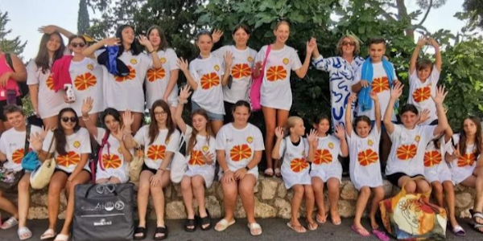
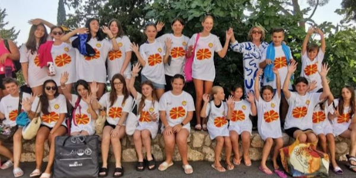
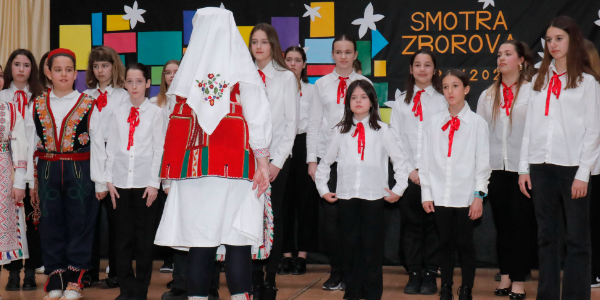
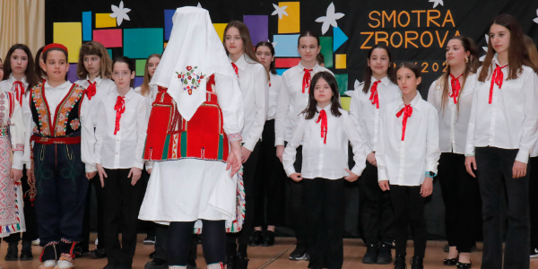

 



Obavijesti - EU Projekti
EU projekti pružaju priliku učenicima za sudjelovanje u projektima Europske unije, gdje uče o kulturnoj raznolikosti i suradnji.
#ErasmusDays u Ličkom Novom
U utorak 29.10. 2024. učenici 8. razreda koji su sudjelovali u Erasmus+ projektu EU mobility and our global footprint uputili su se zajedno s učiteljicom Anna Marie Devčić u područnu školu Lički Novi u sklopu Dani Erasmusa gdje su prezentirali učenicima od 1. do 4. razreda boravak u Francuskoj te su podijelili svoja iskustva.
Učiteljica učenika Hana Štimac, koja je bila uključena u mobilnost u Francusku također je podijelila svoja iskustva i dodatno im približila događaj.
Europski dan jezika 2024.
Europski dan jezika obilježava se svake godine 26. rujna.
Na taj se dan slavi jezična raznolikost kontinenta s više od 200 jezika, 24 službena jezika EU-a, uključujući hrvatski te tri pisma.
Uz to, u Europi se govori oko 60 regionalnih i manjinskih jezika. Obilježavanjem Europskog dana jezika želi se potaknuti učenje stranih jezika među ljudima. Osnovna škola dr. Jure Turića Europski dan jezika obilježila je na nekoliko načina.
Prvoj osnovnoj školi odobren još jedan vrijedan europski projekt!
Iako I. osnovna škola Varaždin trenutno provodi 5 Erasmus+ projekata, školski projektni tim nastavlja s tom praksom kako bi svi zainteresirani odgojno-obrazovni djelatnici, ali i učenici imali priliku sudjelovati na međunarodnim edukacijama te stjecati iskustva i nova znanja u školama diljem Europe.
Od iduće školske godine škola ulazi u novi Erasmus KA1 projekt ‘Kroz vrata Europe do škole budućnosti’ čiji su glavni ciljevi poboljšanje kvalitete i učinkovitosti sustava obrazovanja i osposobljavanja djelatnika primjenom IKT-a te povećanje inovativnosti i kreativnosti kod učenika razredne i predmetne nastave.
U sklopu ovog dvogodišnjeg projekta čija vrijednost iznosi 5.518.00 eura na razmjenu iskustva i primjera dobre prakse odlazi 4 učitelja I. osnovne škole Varaždin – dvoje u CEIP BERNARDINO PÉREZ u Španjolskoj, a dvoje u OŠ Bistrica ob Sotli u Sloveniju.
Ostvarena prva mobilnost u sklopu Erasmus+ projekta “EU mobility and our global footprint”
Po prvi put u povijesti, OŠ dr. Jure Turića sudjelovala je u jednom Erasmus+ projektu, u kojemu je ugostila učenike iz grada Sauzé-Vaussaisa iz Francuske.
Posjet učenika iz Francuske odvijao se od subote 6. 4. do petka 12. 4. 2024. g.
Učenici iz Francuske stigli su u Zagreb u noćnima satima i smješteni su u Hostel Moving. Nakon doručka dočekali su ih učenici iz Gospića pred hostelom i upoznali se s kolegama iz Francuske.